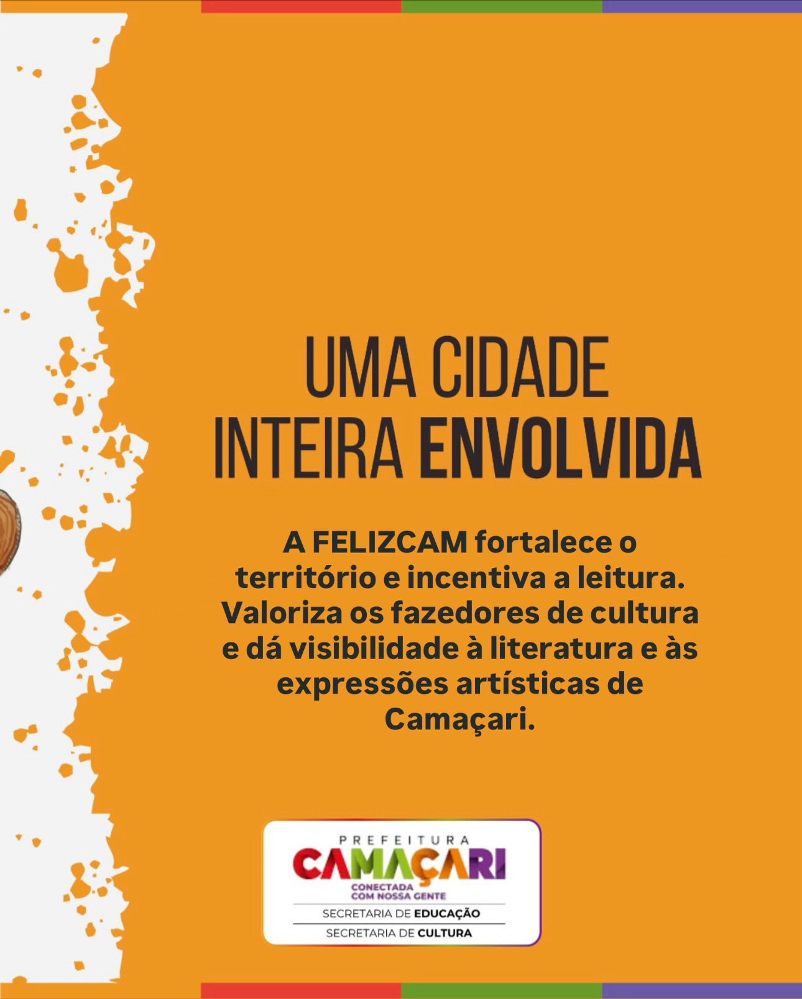
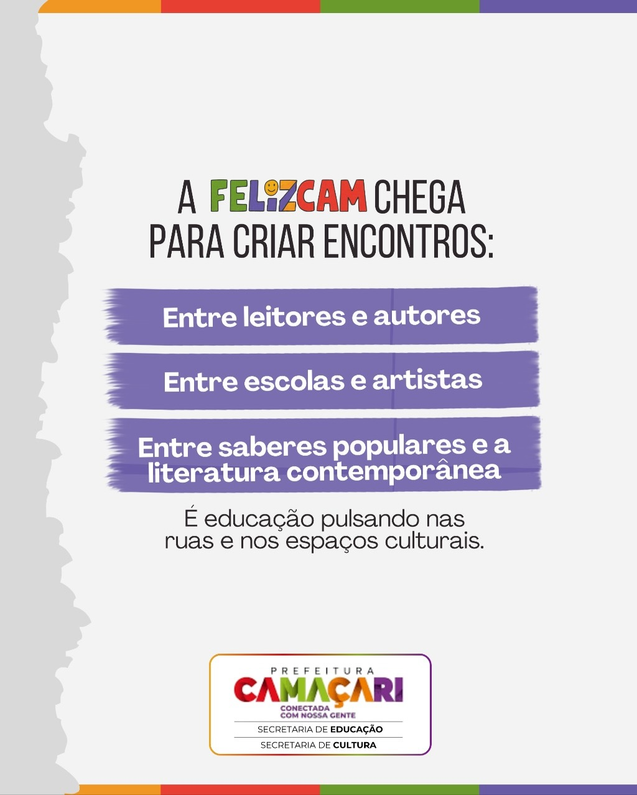

Objetivos da FELIZCAM
Um evento para transformar Camaçari em uma cidade mais leitora

Uma cidade inteira envolvida
O FELIZCAM projeto visa estimular o desenvolvimento regional, incentivar a leitura e valorizar os criadores culturais, aumentando a visibilidade da expressão literária e artística de Camaçari.

Criando encontros
A FELIZCAM chega para criar conexões entre leitores e autores, escolas e artistas, e entre os saberes populares e a literatura contemporânea, fortalecendo a teia cultural da cidade.

Vem ser feliz. Camaçari!
Um evento gratuito que celebra a alegria da leitura e da cultura, convidando toda a comunidade a participar de atividades que enriquecem e transformam vidas através da literatura.